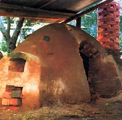
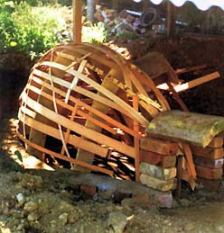
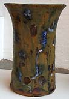
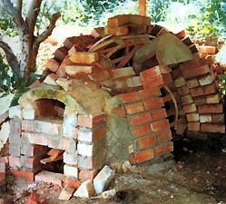

It
is 28 years since I visited the place where Arakawa
Toyozo lived and worked. As a recipient of a Myer Foundation
Geijutsu Fellowship I knew I was following the footsteps of many
before me. It wasn't the first time I had experienced the lure
of Japan: 18 years earlier, on a troop-carrier still with wartime
landing craft winched either side, we ferried back and forth to
Japan; but in those days there were restrictions on where one
was allowed to travel. Mia Jima, or Shrine Island as I knew it,
was accessible and it cast a life-long spell and the port of Kure
was interesting with its massive maritime shipbuilding facilities
still intact. Hiro is a smallish country town close by and family
treasures were being sold to occupation personnel to ease the
frugality of the times. It was there I bought my first pot. I
still have that Satsuma vase and have even traced its origin,
delighted to find that the pottery where it was made is still
in existence. They even knew when the pot was made by the quality
of the gold over-glaze. Back then I never knew that one day I
would make return visits, under my own steam these times, and
as a potter.
Fujio
Koyama made the Arakawa visit possible. Not only did he
make the arrangements but supplied one of his apprentices to accompany
me. Invited into the Arakawa home I handled my first Arakawa tea
bowl then climbed up the hill to see the famous kiln that fellow
Australian Janet Barriskill was later to write about. At first
glance it was scarcely distinguishable from the surrounding rubble.
It captivated me and I vowed to make one like it, but never have.
The nearest I came was a far more respectable looking affair,
which only lasted a few years because where it was built was in
a country village, and only a hundred metres or so from the Country
Fire Service. Fires had almost devastated the area on more than
one occasion and the slightest sight or smell of smoke was cause
for alarm. During winter, when it should have been possible to
fire it without concern, proved difficult because of the unsuspected
presence of ground water draining from some nearby source and
saturating the hearth. Foolishly, in the early stages of construction
I hadn't dug out deeply under the hearth for a foundation of heavy
aggregate road metal and drainage rubble to be incorporated into
the plan. The wet conditions did produce some marvelousblack'
pots, but it was a struggle to get to temperature even when I
supplemented the firings with gas. The kiln was finally demolished
but the dream to build another one a real Arakawa one the
next time still persists.
The
word 'anagama' these days is
a loosely used term when describing kiln types. My kiln was only
partially buried; the back half of the kiln was banked with earth
and rubble whereas the front was partially banked up to the kiln
entry, which was just large enough to crawl in and out.
There
wasn't a proper plan drawn up. I knew the length and width of
the chamber size I wanted and, after roughly marking the shape
out on the ground, dug out a trench for the bottom row of bricks.
This was filled with heavy aggregate concrete and the bricks were
laid at the angle the walls were to be. I had decided on a catenary
arch structure and this determined the angle of the walls. I had
made four arch forms; these had been made the usual way, by hanging
a chain on a wall at the width and depth needed. Under the hanging
chain were sheets of newspaper on which were traced the curves
of the chain. This outline was transferred to scrap timber and
the arch shapes were formed. When the arch forms are located in
their positions you must chock them up about 5mm or so enabling
the chocks to be removed, for the forms to be lowered, after the
arch bricks are laid. It is also advisable to screw the forms
together so they can be disassembled inside the kiln to allow
easy removal after the bricklaying is completed.
I
had a neighbour who was both potter and skilled worker in timber.
From scrap timber he cut me long lathes thin enough to bend. These
were laced over the basic arch supports. When you lace timber
this way it is surprising how strong the supporting structure
becomes. It was then a simple matter of deciding where the door
should be, making an arch and putting it in place. The rest was
simple brick laying, using scrap clay loaded with sand and grog
and also using wedges of harder clay to fill in the top gaps as
the bricks spread apart following the curve of the forms.3 At
rear of the kiln I had determined the flue size needed and, at
the front, the size of the firebox. As LP gas was to be used as
both an initial and supplementary fuel to the wood, a large chimneystack
wasn't really necessary. Firing this way made the task much less
arduous although there were times when I enjoyed the help of some
volunteers to ease the burden of stoking. Having gas also meant
that on occasions I could choose quite green and sappy eucalyptus
to get some marvelous colour flashes from complex hydrocarbons
and timber gums without dropping temperature. Purists might find
the practice of using both gas and wood not all that authentic
but we must make the choices that suit our individual situations.
One good point about using the two fuels together is that ash
is almost blown on to the ware, especially when you stir up the
ash bed.
The
firebox was a simple affair but it was quite large for such a
small kiln and it was possible to fire with wood only if desired.
The bagwall was chequered and this allowed some direct flames
on the front-stacked pots. The flue exit at the back could be
blocked with a brick to cut down the size if necessary. On this
particular kiln I was able to control reduction by using a broken
kiln shelf to close down the top of the stack, although on other
kilns I have built it was possible to devise a damper built into
the bottom of the stack. If I was using both fuels at once it
was possible to bring about reduction just by introducing green
timber.
There
are basic rules to be followed in kiln-building and one I subscribe
to is 'keep it simple'. During my woodfiring
learning days I recall discussing one particular kiln with the
late John Chappell, during his fateful trip to Australia from
Japan. I had found it impossible to get above a certain temperature
and was almost in despair. He solved the problem in half a minute
and gave me the best lesson I could have at that time. His advice
was: Avoid complicated designs and make sure that bagwall heights
and flue exits and chimney height can be altered without having
to engage in massive rebuilding. It was good advice. The next
best advice I received about woodfiring was, Don't choke your
ash-pit, keep your stoked fuel both loose and open and always
keep a trace of smoke coming out the chimney; that way you know
your temperature is more likely to be going up, not down. There
are other fireboxes that are more labor-saving and there is no
shortage of plans. But if you want to enjoy the thought of a contest
with a fairly rudimentary kiln, this small one I built could be
a good start. You might also learn about woodfiring at the same
time. But few things in life are as easy as they sound.

Milton
Moon is a ceramic artist living in South Australia. He has had
a distinguished career as a potter for more than 50 years. Article
courtesy Milton Moon and Ceramics
Art & Perception.